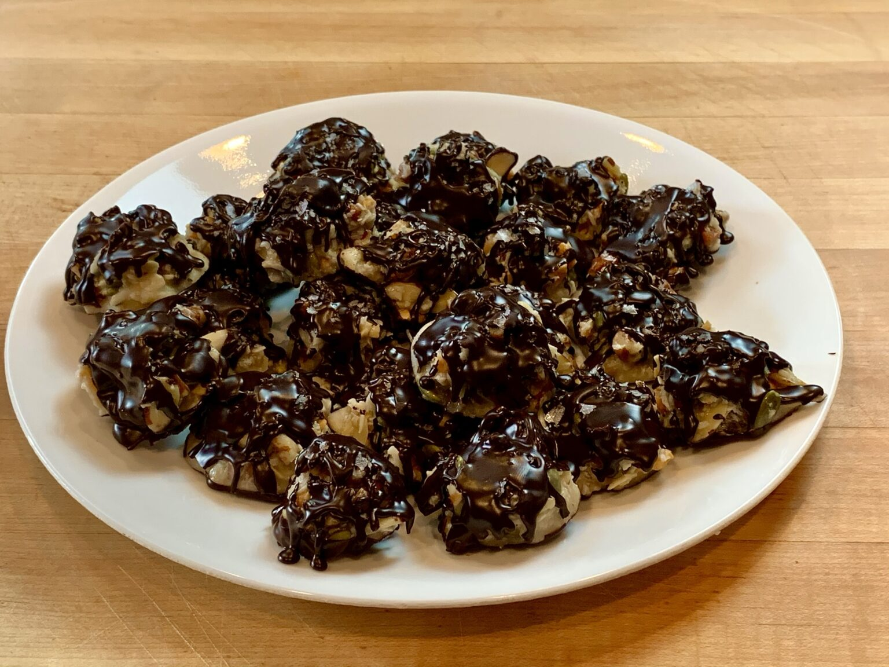

Home
Keto Chocolate Nut Clusters
*** Recipe and image by Serious Keto ***

Ingredients
- 1⁄2 cup pecan pieces (55g)
- 1⁄4 cup pepitas/shelled pumpkin seeds (37g)
- 1⁄2 cup unsweetened shredded coconut (40g)
- 1⁄4 cup cashew pieces (32g)
- 4 TB unsalted butter (60g)
- 1⁄2 cup BochaSweet (115g) *see note 2
- 1⁄4 cup ChocZero Syrup (57g) *see note 3
- 7 oz keto friendly chocolate chips (200g) *see note 4
- 1.5 oz food grade paraffin wax or beeswax (45g) *see note 5
- 1-2 TB Maldon sea salt flakes
Steps
- In a medium mixing bowl, combine the nuts and coconut. Set aside.
- In a small sauce pan, melt the butter, BochaSweet and syrup over medium heat. As the mixture starts to bubble, whisk constantly. Once you can no longer whisk down the bubbles, let it go for another 5-10 seconds then remove from heat.
- Pour the hot syrup over your nut mixture, then using a spatula, mix until thoroughly combined. Pat it down and let it cool for 15 minutes, stirring every few minutes, as the syrup soaks into the coconut and begins to firm up.
- Spoon out the mixture in tablespoon size servings onto a cookie sheet lined with a silicone mat. Using a #50 disher will yield 24 perfectly portioned clusters. Set the tray in the refrigerator for 1 hour to allow the clusters to firm up.
- In a double boiler, melt the paraffin wax, then add the chocolate chips. Stir until sauce is completely smooth.
- Peel the clusters off of the silicone mat and dip the bottom, flat side in the chocolate, then return them to the tray. Using a spoon, drizzle the melted chocolate over the top of the clusters, then sprinkle with Maldon sea salt flakes.
- Chill in the refrigerator for another 30 minutes. At this point, these clusters will be stable at room temp. No need to refrigerate.